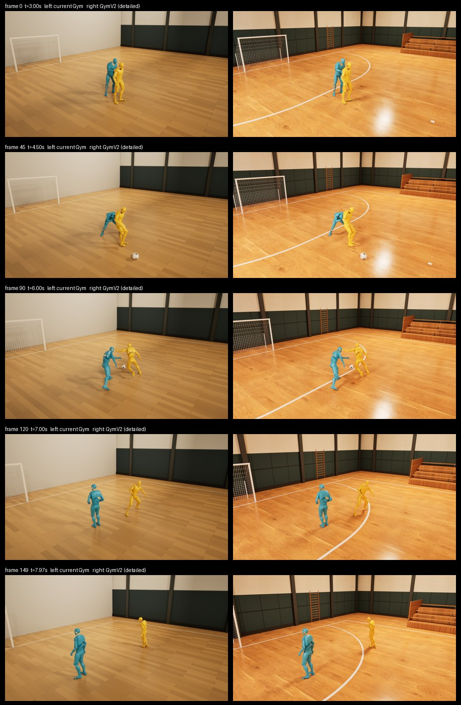
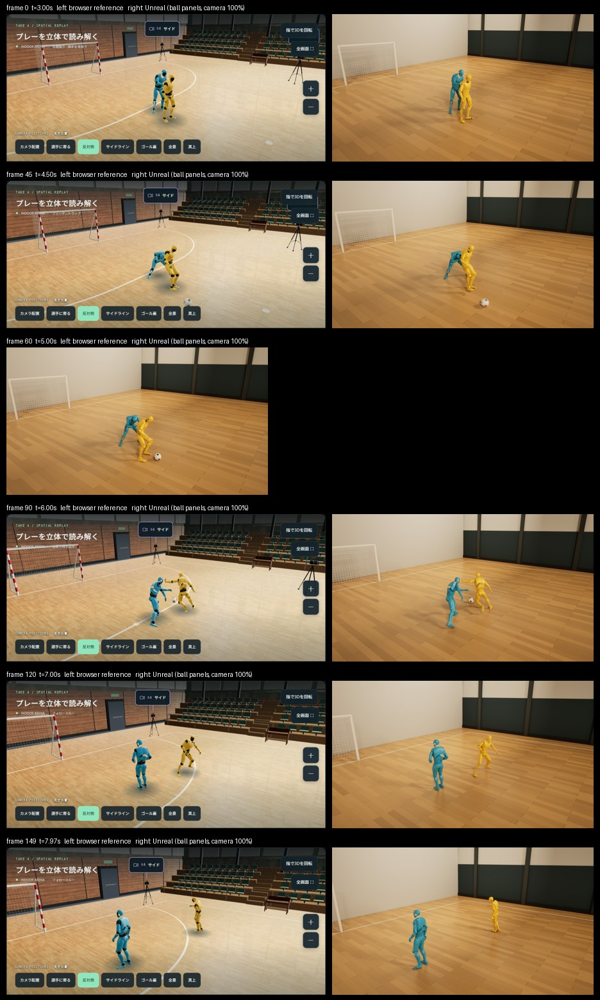

CLUTCH AIMORIOKA / Take AUnreal Engine 5
01 / SOURCE
4つの視点。ひとつの瞬間。
4方向の映像を同期再生。
スローとシークで、動きの細部まで。
SYNCHRONIZED / 4 CAMERASTAKE A
01 西側
02 ゴール裏
03 東側
04 サイド
0.00 / 8.00 s
西側 / ゴール裏 / 東側 / サイドこのプレーを3Dで見る
03 / FILM
動きを、もう一度描く。
UNREAL ENGINE 5
5 SECONDS / 1080P / 30 FPS
NEW / 新版ORIGINAL / 旧版
0.00 / 5.00 s
元のプレーの3〜8秒を再構成 / 動作確認用モデル映像をダウンロード
映像について・比較を見る
4台の映像から再構成した動きを、Unreal Engineの体育館で再生しています。人物は動作確認用の単色モデルです。元映像の完全な再現を示すものではありません。
「比較」では境界をドラッグして、新旧の会場を見比べられます。キーボードでは Space で再生・停止、← → でコマ送り、F で全画面。

